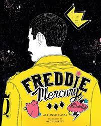
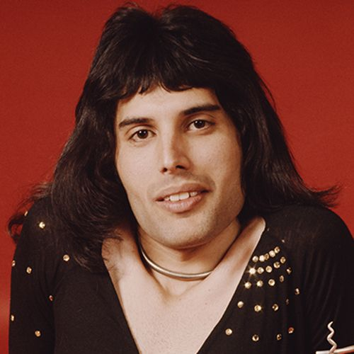
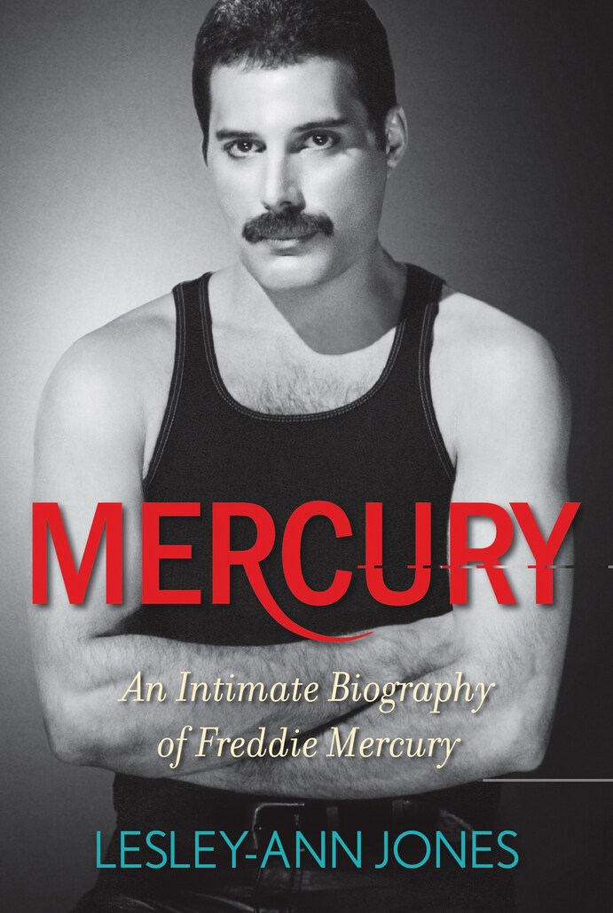
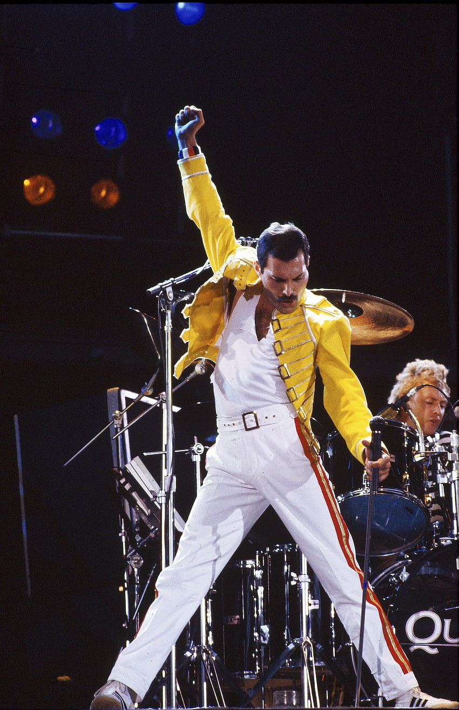
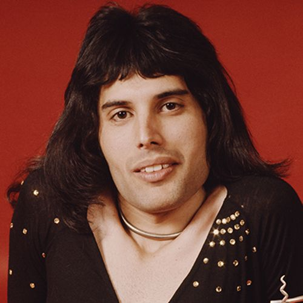
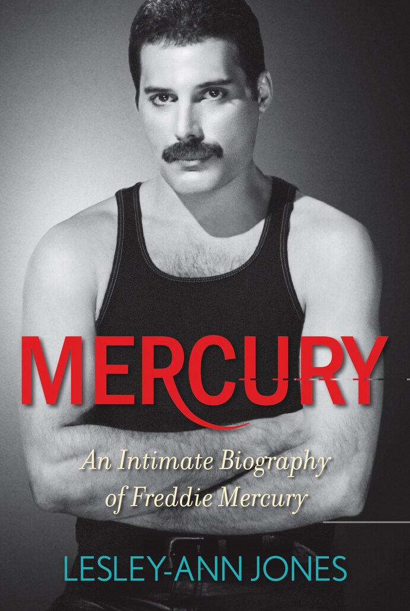
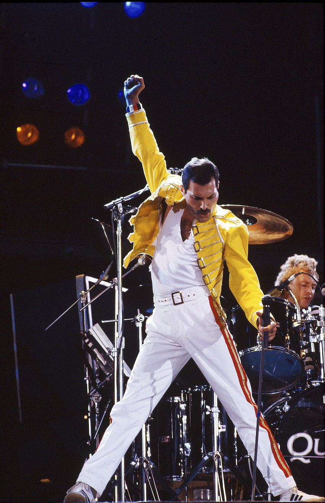

Freddie Mercury(1946-1991)
was a British singer and songwriter, who achieved worldwide fame as the lead vocalist and pianist of the rock band Queen. Regarded as one of the greatest singers in the history of rock music, he was known for his flamboyant stage persona and four-octave vocal range. Mercury defied the conventions of a rock frontman with his theatrical style, influencing the artistic direction of Queen.

Freddie Mercury was born on the Tanzanian island of Zanzibar.



"One good thing about music,
when it hits you, you feel no pain." .
Freddie Mercury was born on the Tanzanian island of Zanzibar.
His parents, Bomi and Jer
Bulsara, sent him
off
to a private school in India,
from 1955 til 1963. In 1964, he and his family flew to England.
In 1966 he
started
his education at the Ealing College of Art, where he graduated in 1969.



"One good thing about music,
when it hits you, you feel no pain." .